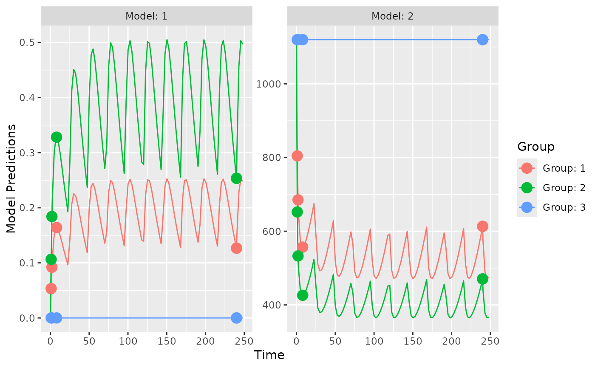

Structural model: one-compartment, oral absorption, multiple bolus dose, parameterized using CL driving an inhibitory IMAX model with a direct effect.
Source:R/models.R
ff.PKPD.1.comp.oral.md.CL.imax.RdThis is a structural model function that encodes the model described above.
The function is suitable for input to the create.poped.database function using the
ff_fun or ff_file argument.
Arguments
- model_switch
a vector of values, the same size as
xt, identifying which model response should be computed for the corresponding xt value. Used for multiple response models.- xt
a vector of independent variable values (often time).
- parameters
A named list of parameter values.
- poped.db
a poped database. This can be used to extract information that may be needed in the model file.
Value
A list consisting of:
y the values of the model at the specified points.
poped.db A (potentially modified) poped database.
See also
Other models:
feps.add(),
feps.add.prop(),
feps.prop(),
ff.PK.1.comp.oral.md.CL(),
ff.PK.1.comp.oral.md.KE(),
ff.PK.1.comp.oral.sd.CL(),
ff.PK.1.comp.oral.sd.KE(),
ff.PKPD.1.comp.sd.CL.emax()
Other structural_models:
ff.PK.1.comp.oral.md.CL(),
ff.PK.1.comp.oral.md.KE(),
ff.PK.1.comp.oral.sd.CL(),
ff.PK.1.comp.oral.sd.KE(),
ff.PKPD.1.comp.sd.CL.emax()
Examples
library(PopED)
## find the parameters that are needed to define from the structural model
ff.PKPD.1.comp.oral.md.CL.imax
#> function (model_switch, xt, parameters, poped.db)
#> {
#> with(as.list(parameters), {
#> y = xt
#> MS <- model_switch
#> returnArgs = ff.PK.1.comp.oral.md.CL(model_switch, xt,
#> parameters, poped.db)
#> CONC = returnArgs$y
#> EFF = E0 * (1 - CONC * IMAX/(IC50 + CONC))
#> y[MS == 1] = CONC[MS == 1]
#> y[MS == 2] = EFF[MS == 2]
#> return(list(y = y, poped.db = poped.db))
#> })
#> }
#> <bytecode: 0x5570784fba68>
#> <environment: namespace:PopED>
ff.PK.1.comp.oral.md.CL
#> function (model_switch, xt, parameters, poped.db)
#> {
#> with(as.list(parameters), {
#> y = xt
#> N = floor(xt/TAU) + 1
#> y = (DOSE * Favail/V) * (KA/(KA - CL/V)) * (exp(-CL/V *
#> (xt - (N - 1) * TAU)) * (1 - exp(-N * CL/V * TAU))/(1 -
#> exp(-CL/V * TAU)) - exp(-KA * (xt - (N - 1) * TAU)) *
#> (1 - exp(-N * KA * TAU))/(1 - exp(-KA * TAU)))
#> return(list(y = y, poped.db = poped.db))
#> })
#> }
#> <bytecode: 0x557071c69eb0>
#> <environment: namespace:PopED>
## -- parameter definition function
## -- names match parameters in function ff
sfg <- function(x,a,bpop,b,bocc){
## -- parameter definition function
parameters=c( V=bpop[1]*exp(b[1]),
KA=bpop[2]*exp(b[2]),
CL=bpop[3]*exp(b[3]),
Favail=bpop[4],
DOSE=a[1],
TAU = a[2],
E0=bpop[5]*exp(b[4]),
IMAX=bpop[6],
IC50=bpop[7])
return( parameters )
}
feps <- function(model_switch,xt,parameters,epsi,poped.db){
## -- Residual Error function
returnArgs <- do.call(poped.db$model$ff_pointer,list(model_switch,xt,parameters,poped.db))
y <- returnArgs[[1]]
poped.db <- returnArgs[[2]]
MS <- model_switch
pk.dv <- y*(1+epsi[,1])+epsi[,2]
pd.dv <- y*(1+epsi[,3])+epsi[,4]
y[MS==1] = pk.dv[MS==1]
y[MS==2] = pd.dv[MS==2]
return(list( y= y,poped.db =poped.db ))
}
## -- Define initial design and design space
poped.db <- create.poped.database(ff_fun=ff.PKPD.1.comp.oral.md.CL.imax,
fError_fun=feps,
fg_fun=sfg,
groupsize=20,
m=3,
bpop=c(V=72.8,KA=0.25,CL=3.75,Favail=0.9,
E0=1120,IMAX=0.807,IC50=0.0993),
notfixed_bpop=c(1,1,1,0,1,1,1),
d=c(V=0.09,KA=0.09,CL=0.25^2,E0=0.09),
sigma=c(0.04,5e-6,0.09,100),
notfixed_sigma=c(0,0,0,0),
xt=c( 1,2,8,240,240,1,2,8,240,240),
minxt=c(0,0,0,240,240,0,0,0,240,240),
maxxt=c(10,10,10,248,248,10,10,10,248,248),
G_xt=c(1,2,3,4,5,1,2,3,4,5),
model_switch=c(1,1,1,1,1,2,2,2,2,2),
a=cbind(c(20,40,0),c(24,24,24)),
bUseGrouped_xt=1,
ourzero=0,
maxa=c(200,40),
mina=c(0,2))
## create plot of model without variability
plot_model_prediction(poped.db,facet_scales="free")

## evaluate initial design
FIM <- evaluate.fim(poped.db)
FIM
#> [,1] [,2] [,3] [,4] [,5]
#> [1,] 5.382083e-02 -8.55463620 -0.115087642 8.293963e-05 -0.2103527
#> [2,] -8.554636e+00 3038.24916173 -14.769854387 -1.351406e-02 -69.0609684
#> [3,] -1.150876e-01 -14.76985439 39.394916550 3.372827e-03 -7.0857453
#> [4,] 8.293963e-05 -0.01351406 0.003372827 4.403253e-04 -0.4017382
#> [5,] -2.103527e-01 -69.06096842 -7.085745293 -4.017382e-01 821.9499022
#> [6,] 3.704090e-01 5.89767799 16.302391418 1.181080e+00 -1818.6277909
#> [7,] 0.000000e+00 0.00000000 0.000000000 0.000000e+00 0.0000000
#> [8,] 0.000000e+00 0.00000000 0.000000000 0.000000e+00 0.0000000
#> [9,] 0.000000e+00 0.00000000 0.000000000 0.000000e+00 0.0000000
#> [10,] 0.000000e+00 0.00000000 0.000000000 0.000000e+00 0.0000000
#> [,6] [,7] [,8] [,9] [,10]
#> [1,] 0.370409 0.0000000 0.000000 0.000000 0.0000000
#> [2,] 5.897678 0.0000000 0.000000 0.000000 0.0000000
#> [3,] 16.302391 0.0000000 0.000000 0.000000 0.0000000
#> [4,] 1.181080 0.0000000 0.000000 0.000000 0.0000000
#> [5,] -1818.627791 0.0000000 0.000000 0.000000 0.0000000
#> [6,] 5030.928571 0.0000000 0.000000 0.000000 0.0000000
#> [7,] 0.000000 1017.0362159 303.009671 12.339375 0.5721641
#> [8,] 0.000000 303.0096709 450.738936 2.396824 0.1852950
#> [9,] 0.000000 12.3393753 2.396824 3836.326713 2.5117794
#> [10,] 0.000000 0.5721641 0.185295 2.511779 2542.4091838
det(FIM)
#> [1] 1.593643e+18
get_rse(FIM,poped.db)
#> V KA CL E0 IMAX IC50 d_V d_KA
#> 8.119842 9.968612 4.304635 7.076883 9.895340 39.478269 38.960998 58.523188
#> d_CL d_E0
#> 25.832775 22.036110